따로 사서 붙일 것 없이, 아홉 가지 기능이 하나의 그룹웨어에 들어 있습니다.
품의 · 지출결의 · 휴가 · 구매 · 출장 양식으로 기안하고, 승인 · 반려와 의견이 이력으로 남습니다.
출근 · 퇴근을 단추 하나로. 정한 출근 시각이 지나면 지각으로 표시되고, 관리자는 CSV로 내려받습니다.
일일 · 주간 · 월간 일지를 쓰고 제출하면, 관리자가 검토 의견을 남기고 검토완료로 닫습니다.
직원마다 회사 메일 계정을 연결해 그룹웨어 안에서 받고, 보내고, 폴더로 정리합니다.
공지사항과 자유게시판. 중요한 공지는 맨 위에 고정되고, 홈 화면 사내 소식에도 걸립니다.
부서별 구성원과 직급 · 메일 · 연락처. 이름이나 부서로 동료를 바로 찾습니다.
직원 기본정보와 근로계약, 승진 · 이동 같은 인사 변동 이력, 퇴사 처리까지 한곳에.
연봉 기준과 월별 지급 · 공제 내역을 기록하고, 이번 달 총 지급액과 지급 상태를 한눈에 봅니다.
사용자 · 부서 · 권한 · 결재 양식 · 게시판 · 근무시간을 설정하고, 관리자 작업 기록을 봅니다.
결재는 종이로, 출근부는 엑셀로, 공지는 단체 대화방으로 — 흩어진 일을 한곳에 모읍니다.
아래 화면은 모두 서비전트를 그대로 찍은 것입니다. 이름과 문서는 설명을 위한 가상 회사 자료입니다.
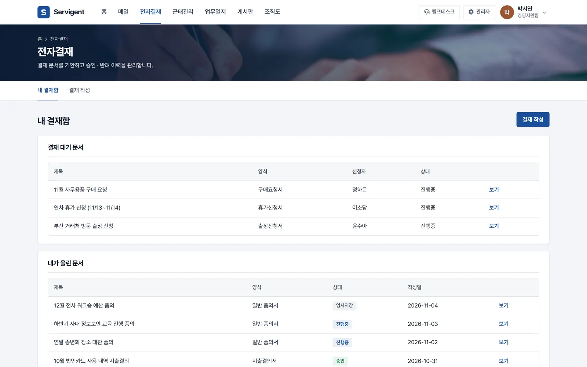
내가 결재할 문서와 내가 올린 문서를 한 화면에서 봅니다.
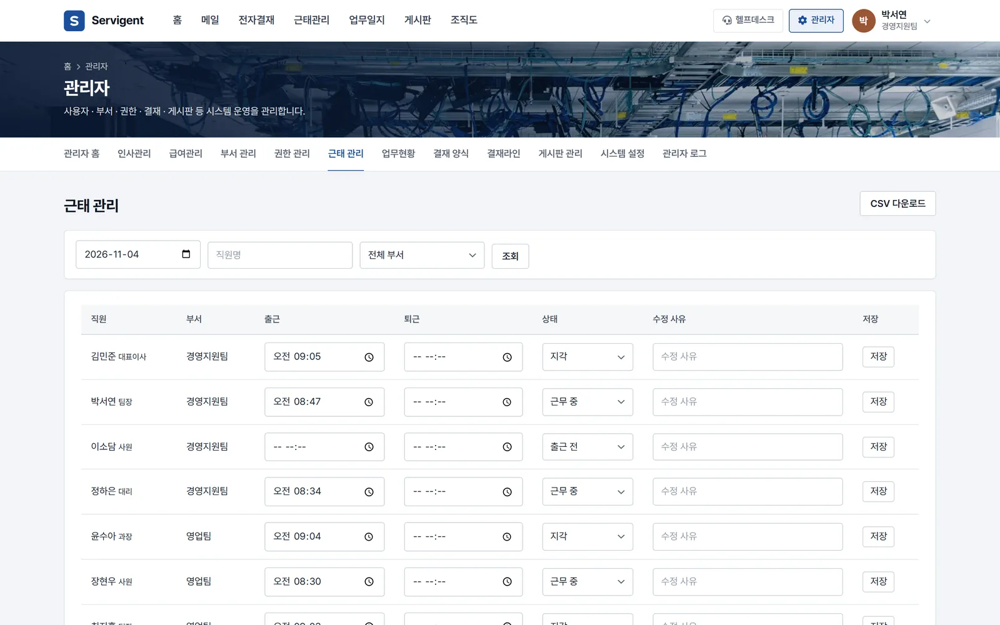
관리자는 날짜와 부서를 골라 전 직원의 출퇴근을 한 번에 봅니다.
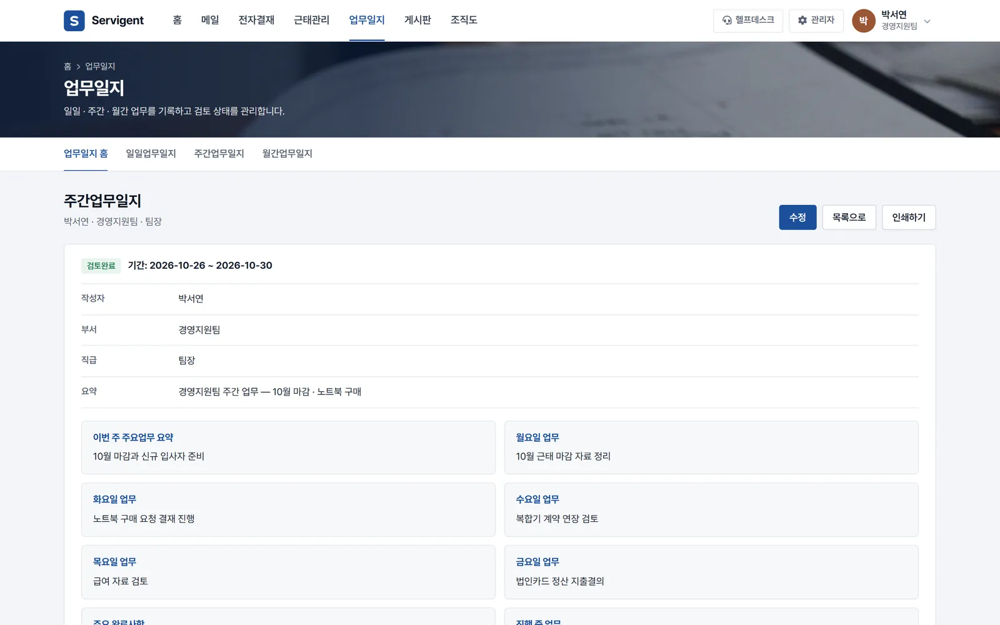
정해진 칸을 채우면 되는 일일 · 주간 · 월간 일지입니다.
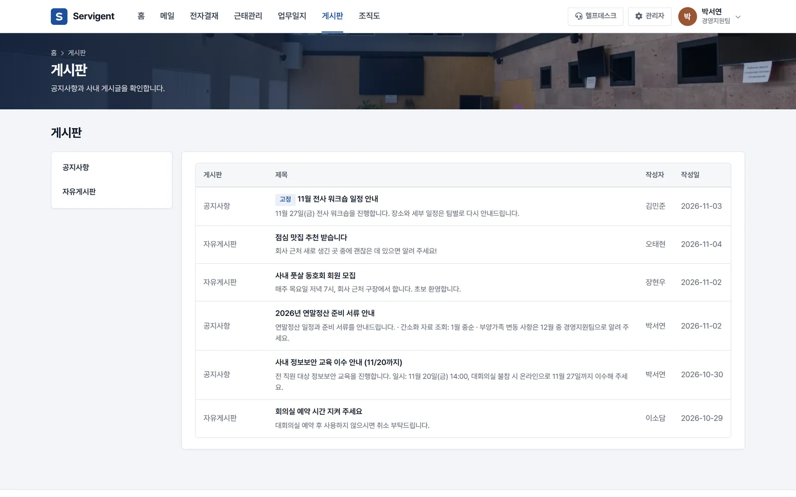
회사 공지와 직원들의 이야기를 나눠 둡니다.
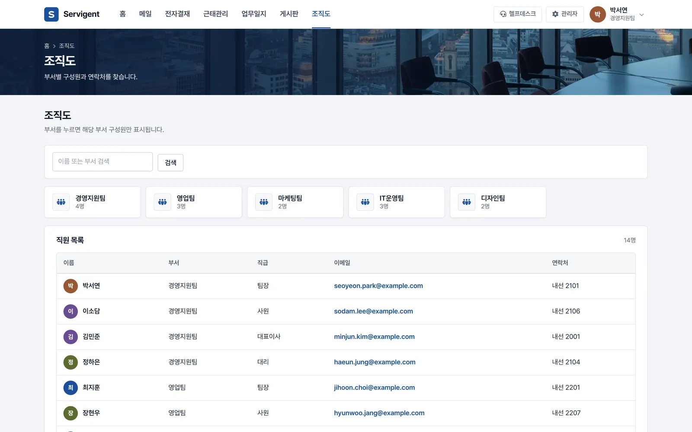
새로 온 직원도 누가 어느 부서인지 바로 압니다.
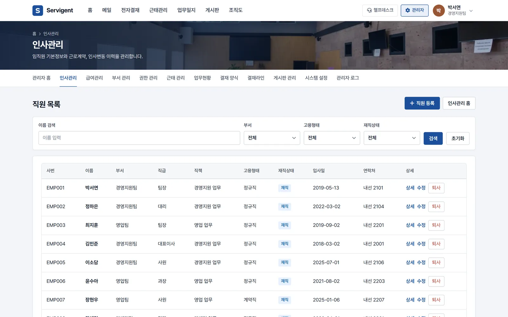
직원 정보를 엑셀 대신 한곳에서 관리합니다.
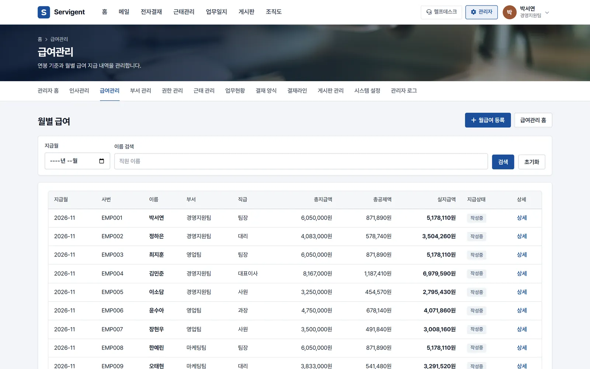
달마다 누구에게 얼마를 지급했는지 기록으로 남깁니다.
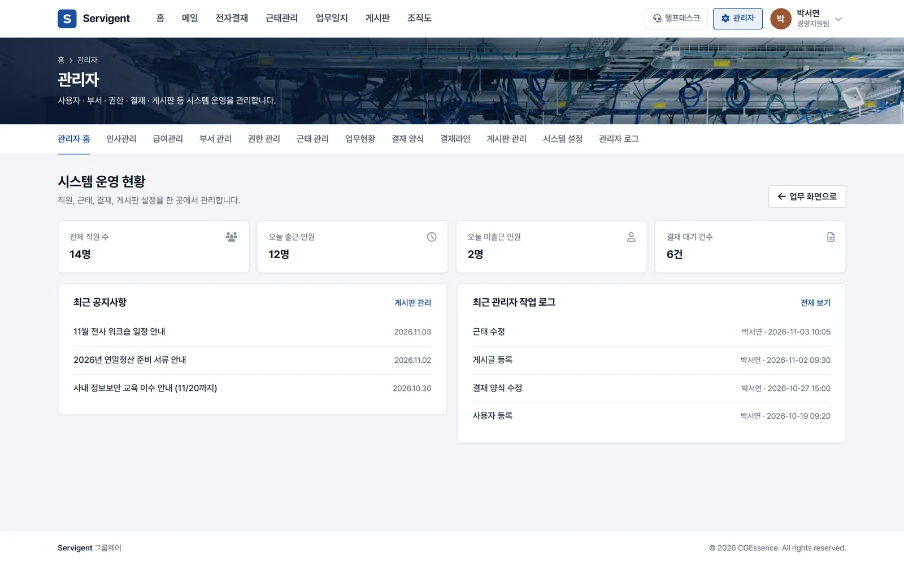
회사 운영 설정을 한 메뉴에서 합니다.
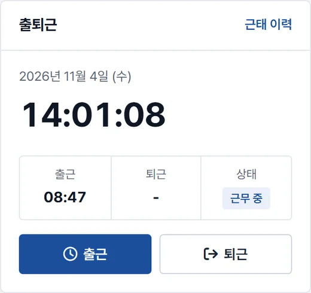
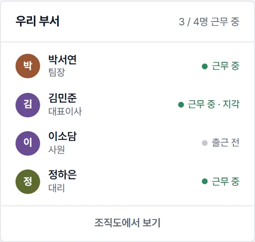
로그인하면 홈 화면 오른쪽에 출퇴근 시계가 있습니다. 누르는 순간 시각이 기록되고, 회사가 정한 출근 시각을 넘기면 지각으로 표시됩니다.
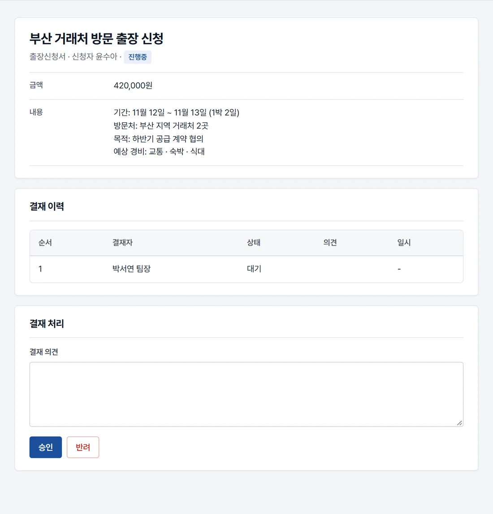
결재를 올릴 때 결재자를 고르면, 그 사람의 결재함과 홈 화면 결재 대기 수에 바로 잡힙니다. 승인 · 반려와 의견, 처리 시각은 문서 아래 결재 이력에 남습니다.
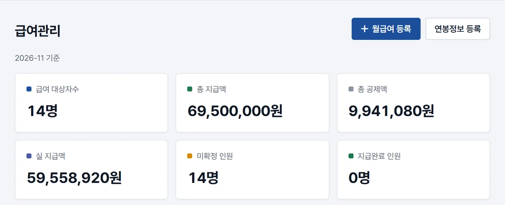
직원 정보, 근로계약, 인사 변동, 연봉 기준과 월별 급여를 그룹웨어 안에 기록합니다. 이 메뉴는 관리자와 인사 · 급여 담당 권한이 있는 사람에게만 열립니다.
휴대폰 브라우저로 같은 주소에 로그인하면, 화면이 휴대폰 폭에 맞춰집니다. 외근 중에도 결재 문서를 열어 승인합니다.
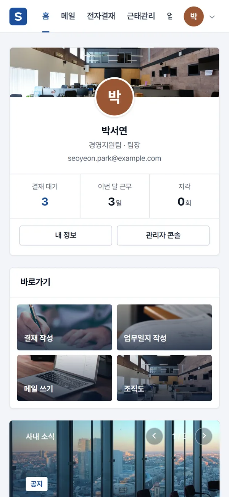
직원 · 결재권자 · 관리자에게 필요한 메뉴가 권한에 맞춰 보입니다.
매일 쓰는 업무를 한 화면에서
기다리는 결재를 놓치지 않게
회사 전체를 설정하고 관리
인사 · 급여 화면은 관리자와 인사 · 급여 담당 권한이 있는 사람만 엽니다. 화면이 아니라 서버에서 확인합니다.
로그인 비밀번호는 되돌릴 수 없는 방식(해시)으로 저장하고, 15분 안에 5번 틀리면 로그인 시도를 막습니다. 메일 비밀번호도 암호화해 저장합니다.
퇴사한 직원은 지우지 않고 사용 중지로 바꿉니다. 로그인은 막히고, 그동안의 결재 · 근태 이력은 남습니다.
사용자 등록 · 권한 변경 · 근태 수정 같은 관리자 작업은 기록으로 남아, 누가 언제 바꿨는지 확인합니다.
직원 PC에 설치할 것이 없어, 설정을 마친 그날부터 씁니다.
임직원 수와 지금의 결재 · 근태 방식을 들려주시면, 실제 화면으로 맞는지 함께 봅니다.
회사 이름과 기본 근무시간, 부서를 정합니다. 화면 맨 위에 우리 회사 이름이 표시됩니다.
양식을 내려받아 엑셀 한 장으로 전 직원 계정을 한 번에 만듭니다.
직원은 브라우저로 로그인해 출근 기록부터 시작합니다. 결재 양식은 쓰면서 다듬습니다.
아니요. 웹 브라우저로 접속해 로그인하면 됩니다. 휴대폰도 브라우저로 같은 주소에 들어옵니다.
관리자 화면에서 등록 양식을 내려받아 엑셀에 직원 명단을 채워 올리면, 전 직원 계정이 한 번에 만들어집니다.
네. 관리자 설정의 회사명이 화면 맨 위와 로그인 화면에 표시됩니다.
기본으로 품의서 · 지출결의서 · 휴가신청서 · 구매요청서 · 출장신청서 5종이 들어 있고, 관리자가 양식을 추가하거나 고칠 수 있습니다.
계정을 사용 중지로 바꾸면 로그인이 막힙니다. 계정을 지우지 않으므로 그 직원이 남긴 결재 · 근태 이력은 그대로 남습니다.
아닙니다. 정식 서비스입니다. 「fly.dev」는 서버를 운영하는 클라우드 회사의 기본 주소이고, 구독하면 회사마다 전용 서버가 따로 만들어집니다. 우리 회사 도메인(예: gw.회사이름.co.kr)으로 쓰시려면 다음 질문을 봐 주세요.
네. 견적 요청을 주시면 우리 회사 전용 서버와 회사 도메인으로 따로 구축해 드립니다. 필요한 기능을 더하고, 구독하며 쓰던 직원 · 결재 · 근태 기록은 그대로 옮겨 드립니다. 구축이 끝나면 구독과 분리된 우리 회사만의 그룹웨어가 됩니다.
임직원 수와 필요한 기능에 따라 달라집니다. 도입 문의로 알려 주시면 견적과 함께 안내드립니다.
완성된 서비전트를 월 구독으로 바로 쓰시거나, 우리 회사에 맞게 기능을 더해 구축합니다.
바로 쓰기
사용 인원에 따른 월 구독
구독 센터에서 바로 신청하면, 영업일 1일 안에 우리 회사 전용 주소 · 관리자 계정과 설치 파일을 메일로 보내 드립니다. 설치하면 바탕화면에 아이콘이 생깁니다.
우리 회사에 맞게
견적 요청 → 상담 → 견적서 → 구축
서비전트를 바탕으로 우리 회사 업무에 맞는 기능을 더하거나, 화면 · 양식을 바꾸거나, 쓰고 있는 다른 시스템과 연결합니다. 견적 요청 메일을 보내 주시면 상담 뒤 견적서를 드리고, CGEssence 가 직접 찾아가 구축합니다.
임직원 수와 지금 쓰는 결재 · 근태 방식을 알려 주시면, 시연 화면과 함께 도입 방법을 하루 안에 답변드립니다.